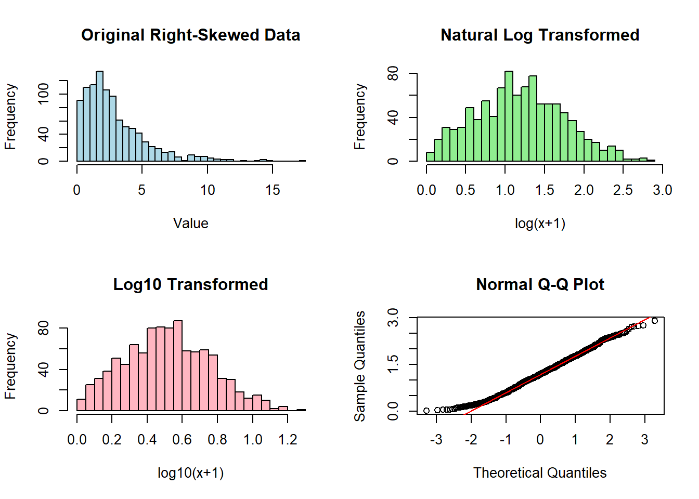
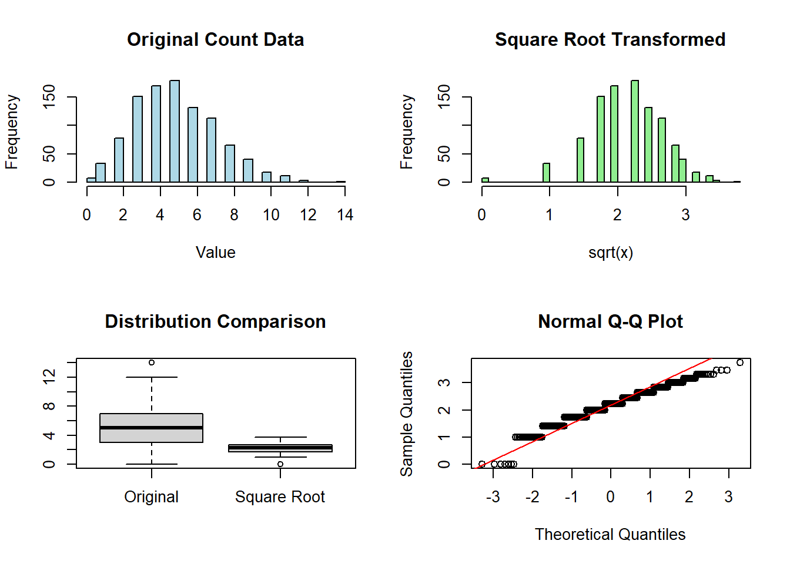
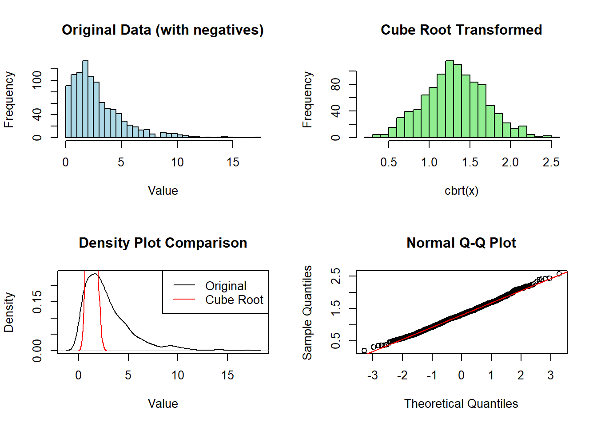
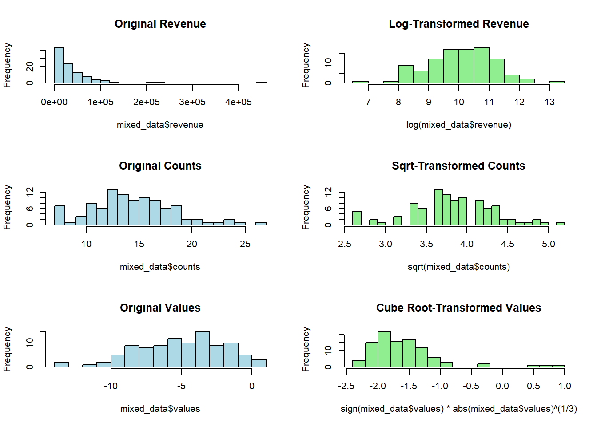
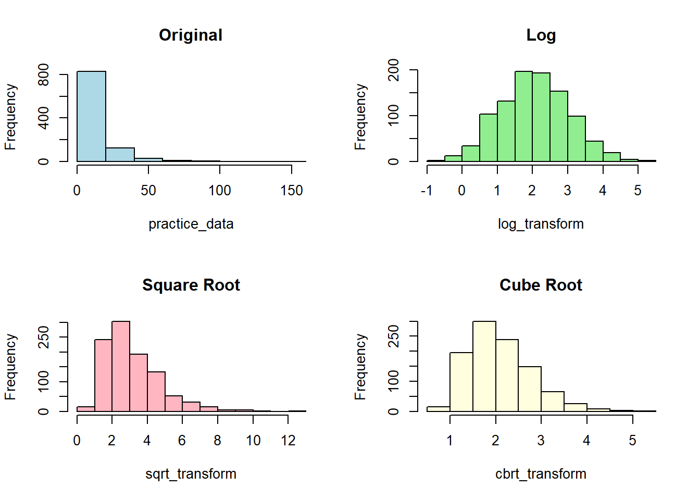

# Set random seed for reproducibility
set.seed(123)
# Create sample datasets with different characteristics
right_skewed_data <- rchisq(1000, df=3) # Right-skewed data
count_data <- rpois(1000, lambda=5) # Count dataIntroduction
Data transformation is a fundamental technique in statistical analysis and data preprocessing. When working with R, understanding how to properly transform data can help meet statistical assumptions, normalize distributions, and improve the accuracy of your analyses. This comprehensive guide will walk you through implementing and visualizing the most common data transformations in R: logarithmic, square root, and cube root transformations, using only base R functions.
Why Transform Data?
Understanding Data Distributions
Data transformations become necessary when your dataset doesn’t meet the assumptions required for statistical analyses. Common scenarios include:
- Highly skewed distributions
- Non-linear relationships
- Heteroscedasticity (unequal variances)
- Non-normal distributions
Common Statistical Assumptions
Before applying transformations, it’s important to understand that many statistical tests require:
- Normal distribution of residuals
- Homoscedasticity
- Linear relationships between variables
Setting Up Our Environment
Let’s start by creating some sample datasets that we’ll use throughout this tutorial:
Types of Data Transformations
1. Logarithmic Transformation
Logarithmic transformation is particularly useful for right-skewed data and multiplicative relationships. Let’s implement and visualize this transformation:
# Create a plotting window with 2 rows and 2 columns
par(mfrow=c(2,2))
# Original data
hist(right_skewed_data,
main="Original Right-Skewed Data",
xlab="Value",
col="lightblue",
breaks=30)
# Natural log transformation (adding 1 to handle zeros)
log_data <- log1p(right_skewed_data)
hist(log_data,
main="Natural Log Transformed",
xlab="log(x+1)",
col="lightgreen",
breaks=30)
# Log base 10 transformation
log10_data <- log10(right_skewed_data + 1)
hist(log10_data,
main="Log10 Transformed",
xlab="log10(x+1)",
col="lightpink",
breaks=30)
# QQ plot of log-transformed data
qqnorm(log_data)
qqline(log_data, col="red")
2. Square Root Transformation
Square root transformation is especially effective for count data and moderate right skewness:
par(mfrow=c(2,2))
# Original count data
hist(count_data,
main="Original Count Data",
xlab="Value",
col="lightblue",
breaks=30)
# Square root transformation
sqrt_data <- sqrt(count_data)
hist(sqrt_data,
main="Square Root Transformed",
xlab="sqrt(x)",
col="lightgreen",
breaks=30)
# Compare distributions
boxplot(count_data, sqrt_data,
names=c("Original", "Square Root"),
main="Distribution Comparison")
# QQ plot of sqrt-transformed data
qqnorm(sqrt_data)
qqline(sqrt_data, col="red")
3. Cube Root Transformation
Cube root transformation:
par(mfrow=c(2,2))
# Original data with negative values
hist(right_skewed_data,
main="Original Data (with negatives)",
xlab="Value",
col="lightblue",
breaks=30)
# Cube root transformation
cbrt_data <- sign(right_skewed_data) * abs(right_skewed_data) ^ (1/3)
hist(cbrt_data,
main="Cube Root Transformed",
xlab="cbrt(x)",
col="lightgreen",
breaks=30)
# Density plots comparison
plot(density(right_skewed_data),
main="Density Plot Comparison",
xlab="Value")
lines(density(cbrt_data), col="red")
legend("topright",
legend=c("Original", "Cube Root"),
col=c("black", "red"),
lty=1)
# QQ plot of cube root-transformed data
qqnorm(cbrt_data)
qqline(cbrt_data, col="red")
Practical Application Example
Let’s work with a more realistic scenario where we have different types of data requiring different transformations:
# Create a dataset with mixed properties
mixed_data <- data.frame(
revenue = exp(rnorm(100, 10, 1)), # Right-skewed
counts = rpois(100, 15), # Count data
values = rnorm(100, -5, 3) # Some negative values
)
# Function to compare original vs transformed
compare_transforms <- function(data, title) {
par(mfrow=c(1,2))
hist(data, main=paste("Original:", title),
col="lightblue", breaks=20)
qqnorm(data, main="Q-Q Plot")
qqline(data, col="red")
}
# Apply and visualize transformations
par(mfrow=c(3,2))
# Revenue data (log transform)
hist(mixed_data$revenue,
main="Original Revenue",
col="lightblue", breaks=20)
hist(log(mixed_data$revenue),
main="Log-Transformed Revenue",
col="lightgreen", breaks=20)
# Count data (square root transform)
hist(mixed_data$counts,
main="Original Counts",
col="lightblue", breaks=20)
hist(sqrt(mixed_data$counts),
main="Sqrt-Transformed Counts",
col="lightgreen", breaks=20)
# Values with negatives (cube root transform)
hist(mixed_data$values,
main="Original Values",
col="lightblue", breaks=20)
hist(sign(mixed_data$values) * abs(mixed_data$values)^(1/3),
main="Cube Root-Transformed Values",
col="lightgreen", breaks=20)
Your Turn!
Try this practice exercise:
Problem: Create a dataset with extreme right skewness and compare the effectiveness of all three transformations.
Click Here for Solution
# Solution
set.seed(456)
practice_data <- exp(rnorm(1000, mean=2, sd=1))
# Apply transformations
log_transform <- log(practice_data)
sqrt_transform <- sqrt(practice_data)
cbrt_transform <- sign(practice_data) * abs(practice_data)^(1/3)
# Create visualization
par(mfrow=c(2,2))
hist(practice_data, main="Original", col="lightblue")
hist(log_transform, main="Log", col="lightgreen")
hist(sqrt_transform, main="Square Root", col="lightpink")
hist(cbrt_transform, main="Cube Root", col="lightyellow")
Best Practices and Tips
Choosing the Right Transformation:
- Use log transformation for right-skewed data and multiplicative relationships
- Apply square root transformation for count data and moderate skewness
- Use cube root transformation when dealing with negative values
Handling Special Cases:
# Handling zeros in log transformation log_data <- log1p(data) # Same as log(data + 1) # Handling negative values cbrt_data <- sign(data) * abs(data)^(1/3)Checking Transformation Effectiveness:
# Visual check with Q-Q plot qqnorm(transformed_data) qqline(transformed_data, col="red") # Shapiro-Wilk test for normality shapiro.test(transformed_data)
Quick Takeaways
- Log transformation is best for right-skewed data and multiplicative relationships
- Square root transformation works well for count data and moderate right skewness
- Cube root transformation is useful when dealing with negative values
- Always visualize your data before and after transformation
- Consider the interpretability of your results when choosing a transformation
FAQs
When should I use log transformation versus square root transformation? Log transformation is better for severe right skewness and multiplicative relationships, while square root transformation is better for count data and moderate skewness.
How do I handle negative values in log transformation? Either add a constant to make all values positive or use cube root transformation instead.
Can I use multiple transformations together? While possible, it’s generally not recommended as it makes interpretation more difficult.
How do I know if a transformation worked? Use visual tools (histograms, Q-Q plots) and formal tests (Shapiro-Wilk) to assess normality.
Should I transform predictor variables, response variables, or both? It depends on your specific analysis goals and the assumptions of your statistical methods.
Conclusion
Data transformation is a powerful tool in R programming for handling non-normal distributions and meeting statistical assumptions. The examples and visualizations provided in this guide demonstrate how to effectively implement and assess different transformations using base R functions.
References
Super Important Note!
Log transformation is particularly effective for handling right-skewed data distributions When working with count data, square root transformations often provide better results. The choice of transformation should be guided by both the data structure and the analytical goals.
Happy Coding! 🚀
You can connect with me at any one of the below:
Telegram Channel here: https://t.me/steveondata
LinkedIn Network here: https://www.linkedin.com/in/spsanderson/
Mastadon Social here: https://mstdn.social/@stevensanderson
RStats Network here: https://rstats.me/@spsanderson
GitHub Network here: https://github.com/spsanderson
Bluesky Network here: https://bsky.app/profile/spsanderson.com
My Book: Extending Excel with Python and R here: https://packt.link/oTyZJ